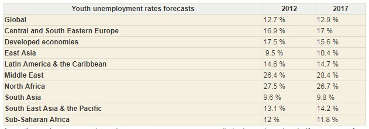

Youth unemployment is a major problem in many countries. A youth is defined by the United Nations (https://www.un.org/) as a person between 15 and 24 years of age. An unemployed person is defined as someone who does not have a job, but is actively seeking work. In order to qualify as unemployed for official and statistical measurement, the individual must be without employment, willing and able to work, of the officially designated 'working age' and actively searching for a position. Youth unemployment rates tend to be higher than the adult rates in every country in the world. Learn more.
The general economic situation in the world has had a major impact on youth unemployment. For example: 4 September 2012 – Unemployment rates among young people will get even worse globally as the spill-over of the euro crisis spreads from advanced to emerging economies, according to a United Nations paper issued today.
Here you can see the percentage difference between global and regional total unemployment rates (age 15 and above), taken from the paper:
Currently, there are many graduates with specialist skills who go unemployed after completing their bachelor or master's degree. Some degree programs make it difficult to get relevant jobs, and the number of relevant and available jobs within several professional areas are decreasing. Because the number of people graduating from university now vastly outweighs the number of high-skilled jobs available, the competition is very high, and it is easier for a person that already has job experience to get a position than it is for a student that has recently graduated. Many are turned down for positions they otherwise qualify for due to lack of experience. But how are you supposed to get work experience when you can't land a position?
Youth unemployment is defined among "10 Major Social Problems That Could Be Fixed With Innovative Solutions" by Listverse. And so, here we present our solution.
=======Youth unemployment is a major problem in many countries. Youth unemployment is the unemployment of young people, defined by the United Nations (https://www.un.org/) as 15–24 years old. An unemployed person is defined as someone who does not have a job but is actively seeking work. In order to qualify as unemployed for official and statistical measurement, the individual must be without employment, willing and able to work, of the officially designated 'working age' and actively searching for a position. Youth unemployment rates tend to be higher than the adult rates in every country in the world. Learn more.
The general economic situation in the world has a major impact on youth unemployment. For example: 4 September 2012 – Jobless rates among young people will get even worse globally as the spill-over of the euro crisis spreads from advanced to emerging economies, according to a United Nations paper issued today.
Here you can see the percentage difference between global and regional total unemployment rates (age 15 and above), taken from the paper:
So, it is many graduates with specialist skills who are sitting without a job after completing their bachelor or master's degree. Some degree programs make it difficult to get relevant jobs. Cause the number of people graduating from university now vastly outweighs the number of high-skilled jobs available. The competition is very high, and of course for people with work experience it is much easier to find a job. But how to get the work experience?
Youth unemployment is defined among "10 Major Social Problems That Could Be Fixed With Innovative Solutions" by Listverse. And here is our solution.
>>>>>>> 2ef9bc22a4c048702e3b2bce35687749adeeb7aa